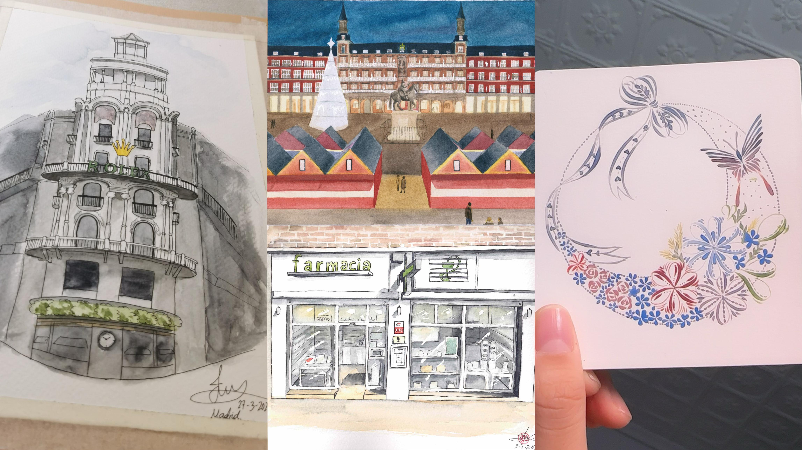
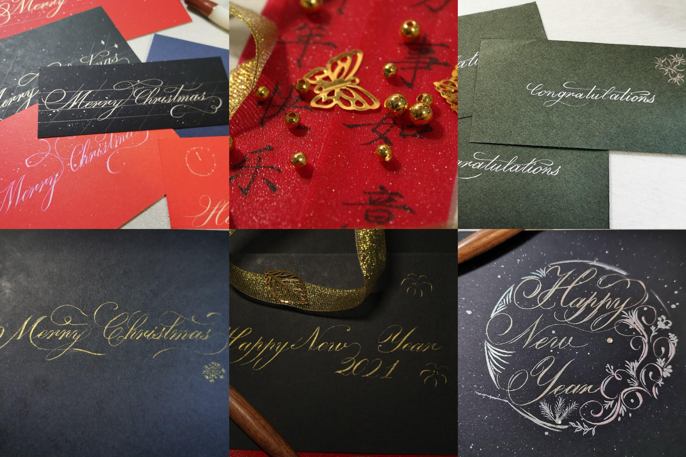
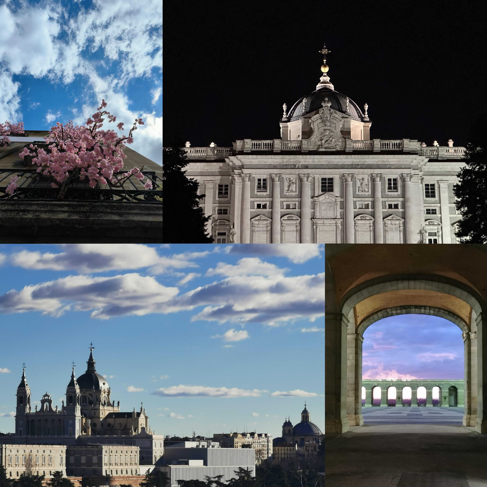

Mi Creatividad en las Bellas Artes: Un Viaje Personal de Expresión y Descubrimiento

La creatividad es una fuerza poderosa que nos permite ver el mundo de una manera única y expresar nuestras emociones y pensamientos más profundos. A lo largo de los años, he descubierto que las bellas artes son mi principal forma de conectar con el mundo y conmigo misma. A través del dibujo, la caligrafía, la fotografía y las manualidades, he logrado explorar diferentes formas de arte y, a través de ellas, encontrar nuevas maneras de comunicarme.
Dibujo: El Arte de Capturar la Realidad
El dibujo es donde todo comenzó. Desde que era pequeña, siempre me ha fascinado la capacidad de los lápices y pinceles para transformar una hoja en blanco en un mundo lleno de detalles y vida. El dibujo me permite explorar mi entorno y plasmar lo que veo y siento, ya sea un retrato, un paisaje o una escena cotidiana. Cada trazo es una forma de expresarme, y cada obra es una pequeña pieza de mí misma.
Caligrafía Oriental y Occidental: El Arte de las Letras
La caligrafía, tanto oriental como occidental, ha sido una de mis pasiones más recientes. En la caligrafía oriental, encuentro una belleza serena y fluida, donde cada trazo refleja la conexión entre el cuerpo, la mente y el espíritu. La caligrafía occidental, por otro lado, me permite experimentar con diferentes estilos de letras, jugando con las formas y el espacio para crear algo visualmente impactante. Ambas formas de caligrafía me enseñan la importancia de la paciencia, la precisión y la dedicación en el proceso creativo.
Fotografía: Congelar Momentos en el Tiempo
La fotografía es otra forma en la que canalizo mi creatividad. Con una cámara en mano, me encanta capturar momentos fugaces y transformarlos en recuerdos visuales que pueden durar toda la vida. La fotografía me permite contar historias a través de imágenes, jugar con la luz y la sombra, y expresar emociones que a veces son difíciles de describir con palabras. Cada fotografía es una instantánea única del mundo que me rodea.
Cada una de estas disciplinas artísticas es un reflejo de mi amor por la creatividad y el deseo de expresarme. A través del dibujo, la caligrafía, la fotografía y las manualidades, encuentro un sinfín de maneras para compartir mis pensamientos, sentimientos y visiones del mundo. El arte es un viaje sin fin, y cada día me inspira a seguir creando, aprendiendo y creciendo como artista.
"El arte es la forma más pura de libertad." — Ansel Adams